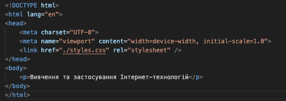

Структура Документа

-
<!DOCTYPE> - особливий тег, він є радше допоміжною інформацією і однозначно говорить браузеру, який стандарт документа він має очікувати для обробки і подальшого відображення. Кожен HTML-документ мусить починатися з тегу <!DOCTYPE>. Для останньої версії HTML цей тег має такий атрибут: <!DOCTYPE html>.
-
<html> — це тег, що розмічає початок і кінець HTML-документа. Його також називають кореневим елементом документа, і всі інші елементи мають знаходитися всередині нього.
-
<head> є також одним із особливих елементів, бо містить в собі метадані. Простіше кажучи, це дані про дані документа. До метаданих документа відноситься, наприклад, назва документа, що вказується у тегу <title>.
-
<body> — тіло документа, яке має містити в собі весь контент HTML-сторінки. Або ж все те, що ви бачите, коли дивитесь сторінку в браузері: заголовки, абзаци, світлини, посилання, списки і таке інше.
-
<meta> - Вказує, який набір символів використано в вашому документі. В абсолютній більшості сучасних HTML-документів немає ніякого сенсу використовувати щось окрім utf-8 в значенні аргументу charset.
-
<link> - таким чином підключається файл стилей до вашого документа, але не будемо забігати наперед, зараз це для загального розуміння.